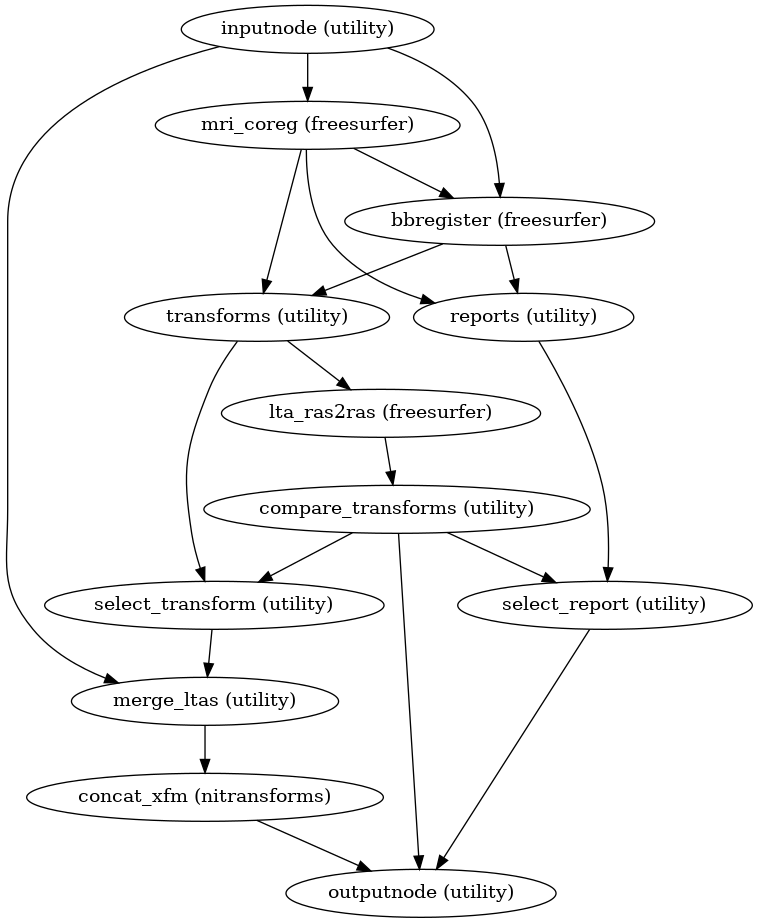

niworkflows.anat.coregistration module¶
Workflow for the registration of EPI datasets to anatomical space via reconstructed surfaces.
-
niworkflows.anat.coregistration.compare_xforms(lta_list, norm_threshold=15)[source]¶ Determine a distance between two affine transformations.
Computes a normalized displacement between two affine transforms as the maximum overall displacement of the midpoints of the faces of a cube, when each transform is applied to the cube. This combines displacement resulting from scaling, translation and rotation. Although the norm is in mm, in a scaling context, it is not necessarily equivalent to that distance in translation. We choose a default threshold of 15mm as a rough heuristic. Normalized displacement above 20mm showed clear signs of distortion, while “good” BBR refinements were frequently below 10mm displaced from the rigid transform. The 10-20mm range was more ambiguous, and 15mm chosen as a compromise. This is open to revisiting in either direction. See discussion in GitHub issue #681 and the underlying implementation.
-
niworkflows.anat.coregistration.init_bbreg_wf(*, omp_nthreads, debug=False, epi2t1w_init='register', epi2t1w_dof=6, name='bbreg_wf', use_bbr=None)[source]¶ Build a workflow to run FreeSurfer’s
bbregister.This workflow uses FreeSurfer’s
bbregisterto register a EPI image to a T1-weighted structural image. It is a counterpart toinit_fsl_bbr_wf(), which performs the same task using FSL’s FLIRT with a BBR cost function. Theuse_bbroption permits a high degree of control over registration. IfFalse, standard, affine coregistration will be performed using FreeSurfer’smri_coregtool. IfTrue,bbregisterwill be seeded with the initial transform found bymri_coreg(equivalent to runningbbregister --init-coreg). IfNone, afterbbregisteris run, the resulting affine transform will be compared to the initial transform found bymri_coreg. Excessive deviation will result in rejecting the BBR refinement and accepting the original, affine registration.- Workflow Graph

(Source code, png, svg, pdf)
- Parameters
use_bbr (
boolor None) – Enable/disable boundary-based registration refinement. IfNone, test BBR result for distortion before accepting.epi2t1w_dof (6, 9 or 12) – Degrees-of-freedom for EPI-T1w registration
epi2t1w_init (
str,"header"or"register") – If"header", use header information for initialization of EPI and T1 images. If"register", align volumes by their centers.name (
str, optional) – Workflow name (default:bbreg_wf)
- Inputs
in_file – Reference EPI image to be registered
fsnative2t1w_xfm – FSL-style affine matrix translating from FreeSurfer T1.mgz to T1w
subjects_dir – Sets FreeSurfer’s
$SUBJECTS_DIRsubject_id – FreeSurfer subject ID (must have a corresponding folder in
$SUBJECTS_DIR)t1w_brain – Unused (see
init_fsl_bbr_wf())t1w_dseg – Unused (see
init_fsl_bbr_wf())
- Outputs
itk_epi_to_t1w – Affine transform from the reference EPI to T1w space (ITK format)
itk_t1w_to_epi – Affine transform from T1w space to EPI space (ITK format)
out_report – Reportlet for assessing registration quality
fallback – Boolean indicating whether BBR was rejected (mri_coreg registration returned)
{kind=link}
{kind=link}